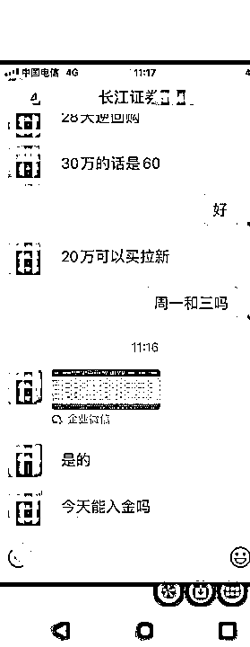

《在金融圈的事业上深耕小类目，无风险套利项目一月稳定盈利3万-6万》
来源：https://wiizueiq5ks.feishu.cn/docx/Fwm9dDPJwoBuCfxdAiYcP0HinRe
各位圈友好，我是老吴说投资，加入生财满打满算也才半年，但跟生财的缘分，就已经在我加入之前结下了良缘。之前在跟朋友聊天过程无意间聊起了生财有术这个平台，我就把我的银行无风险套利行业写了出来，让他代我发了一篇文章。一发出来后，没想到反馈还挺好。3月份的时候没想到当月就变现了一万元。
我立马就报了生财有术。非常感谢生财提供的平台，有那么多的高认知财友，让我赚回了不止10倍的生财门票。可以说这个是一个只要有认知，作为副业都是比较适合个人的。金融也没有高大上，就是一个认知的水平，也不需要高端的视频剪辑，只需要一些基础的人脉和会互联网信息沟通就行。
相比于其他大佬一个月十几万二十几万的变现，我这种赚钱就是算属于笨钱了。就是一单单业务单认真且细分的去做，一个月能多几千是几千，能多几万是几万。我这种玩法，只要有认知，所有的人全部都可以进行渠道变现。
重点是，这是一个普通人完全可以做的副业项目。这个作为副业性项目，简单其实也是一个副业项目，可以是目前的一个蓝海赛道，做的人非常少，非常小众的一个项目。因为属于金融圈信息，大家接触到的信息面很有限，普通人存钱、炒股的非常多，但这种盈利信息渠道网上是非常难发出来的。之前有做过四大行存款无风险套利的项目，但这类的比较高大上，资金放自己卡里无风险，但就是资金要求比较多，我就先发一份之前写的教程放这里， 和 。四大行无风险存款套利在这里就不多说了。
大家都知道信息差的重要价值。所以下面我就介绍一下金融系统中，证券开户有效户的价值。
1、证券项目介绍
- 什么是开户？什么是有效户？什么是资产户？安全性如何？收益高不高？下边我给大家解答下。
- 简单点说，通过指定经理或者营业部开户码，开通股票账户。就是开户。（网上开户，无需去营业部网点）
- 因为证券营业部以及经理本人，每个月每个季度都有任务考核，所以每天有大量有效户订单需要渠道来做推广。经理或者营业部需要靠别人帮助来完成考核，所以产生佣金。
- 而我们手握大量券商的客户经理和老总资源，就需要大量的人去开户和购买新客理财（无风险保底收益）

2、项目的底层逻辑
- 主要目的是为了KPI考核分数，因为每个营业部的业绩有好有坏，就会有大量的证券公司（简称券商）在平时因为业绩需要，为了完成某个KPI指标，就能额外拿到奖金。所以部分的券商就为了达到考核的目标，就会选择出点费用叫渠道帮忙完成任务。这就是证券户冲量的由来。
3、项目前景
- 全国有一百多家券商，几万家网点，多多少少都有这方面的需要。实在某方面业绩差一点，就直接买点指标，可见期间的市场空间有多大。全国那么多人，而且一个人做过后，就会持续带动身边的人薅非常多的羊毛。
4、项目的利润来源
- 完成任务指标后就可以拿到券商给的佣金。有些我们是任务完成，我们先垫资金给渠道的。
- 因为每个开户都要有券商的二维码，所以非常容易锁定某个客户经理，几乎不怕客户经理不给佣金的情况。
5、项目的风险情况
- 一个人开多个证券是不影响的，不会有年费，不用管理费，开的多了顶多给你发发短信而已，屏蔽掉就行了。不上征信，不会透支。所以放心开。
- 为什么看起来收益比较高？因为每个人的身份证一般只能做一次券商所以才高收益。证券含金量远超一般中小银行。
- 每个人可以开几个证券营业部，开多了会不会有什么负面影响？其实不会，因为开户数量没有任何限制，想开多少家就开多少家。但是有限3和不限3的要求，回头会详细讲。而且证券开户也不接入征信，不用担心有什么影响。任务完成了提现即可，账户空着也不会有收取任何费用。
- 有些股票户头需要开户放资金的资金放自己的证券公司上，买的是新客理财(保本保息)，或者国债逆回购（保本保息）。依据现行证券法：遵循“券商管股票、银行管资金原则”，银证三方存管将投资者证券账户与券商保证金账户严格分离管理，券商不接触钱，自然没有卷款跑路的风险。所以风险系数几乎为零。除非说自己手痒去买了一些股票亏了，这个就是自己给自己找不自在了。
- 三方存管可以理解为一个你在银行的一个专用二类户，一端对接上交所/深交所，所有交易中登系统均可查询清清楚楚，一端对接银行一类卡，只能同卡进出，透明、且安全。风险可以说是零。
- 很多人感觉需要投钱的单都不靠谱，都是做0撸单为主，靠重复劳动花大量时间赚个几毛几块的。其实是因为不了解什么是证券单，没有基本的认知，有顾虑，这我也理解。有空的话不妨了解一下证券有效户。
6、项目的渠道持续性和可行性
- 一个人理论上能开3个上海户，100多个深圳户。我们有全国券商的各个接单渠道。理论可以做100多个证券公司。一个家庭可以在1-3年内，薅证券公司羊毛100多次，一家几口拿下个10万利润问题不大。
- 每个人都有资源，都有自己的圈子和人脉。是可以持续的扩张和放大，也可以互联网引流。只要有客户能做，利润就能源源不断。
- 我们是把钱送给客户，不是找客户要钱，所以客户是欢迎的，谁不爱占便宜呢？而且如果设定返佣机制。是能不断的裂变的。
- 成本上，主要就是人工的成本和时间上的成本。如果就自己一个人做，也就没什么成本了。无非就是找渠道做任务.引流合适的人员做任务.发发单等。做的好。是能每天源源不断能产出的。

我是怎么从0-1做这个项目，再1到100的变现
原来在商业银行的时候，其实就很早接触了这个项目的需求了，很多券商会过来接触，让银行的朋友们帮忙开一些券商户头，完成一下任务。后面帮他们完成的任务多了，积累的多了，他们也帮我介绍一些类似的同行和券商老总，互相熟悉后，也帮他们完成了任务。通过时间的积累，就演变出了源源不断的任务单出来。
因为我的负责人的态度和业务能力，就越来越多的券商朋友或者其他人介绍资源给我，所以我就源源不断的券商资源。这样子越来越多的渠道和信息差涌向我，所以就目前的业务在不断地扩张需求，变成我们需要更多的客户去做单。
现在通过这个项目一个月能变现3-6万，利润50,100,200的都有，单户上千的也有。
举例：XX证券，客户只要存个1万元在自己账户，理财利息4%及返佣，能拿835元左右，而对比银行定期一年1.85%，差4.77倍。
比如做100万的长江证券，他在银行理财或者支付宝理财的价格是1000000*0.017/12=1416元。
而证券单可以1个月给：3100（佣金）+1800（券商利息）=4900元，4900比1416差3.5倍。而我们还有500-1000不等的利润，一个月做10单这种，就10000的利润。
所以性价比就明显出来了。只要是认知到位，很多人是不太会拒绝的。事情宣传久了。就很多人带着身边的人和朋友不断地来做这块业务。因为券商给的利息比银行的高，还有佣金可以拿。两全其美。
这个事情的逻辑就是要两个字：项目靠谱→业务知识强→分钱到位→裂变→继续分钱→继续裂变。
金融行业互联网化的变现方式
- 任务是永不停息源源不断的，有需求就有市场。而这个行业最需要的无非是大量的实操者。简单的理解就是需要不断的大量的人来一起薅这个羊毛而已。一个手机号，一个身份证往往就只能注册一个券商。因为信息差的壁垒在，根据目前中国人14亿人口，股票开户也才1亿多户，刨除那些纯粹开户的或者一个人开好几户重复的，其实也才三五千万人懂得炒股，所以这个市场的前景和需求有多大。
变现的方式逻辑
逻辑很简单，开证券户→按规定金额买短期新客理财→出金→结算（部分券商就能当天结算）。
1、变现方式1，家庭式薅羊毛
个人以及亲朋好友一一薅羊毛式变现。就是联系我，我提供对应的证券公司开户方式（APP从应用商城下载），然后根据任务的要求进行存在自己账户上即可。家里人一一根据提供的业务单进行一个一个的薅过去。经过测算，家里人口多的，一个人一年能薅个证券公司5000-3W之间。看具体个人情况了。
2、变现方式2，朋友圈引流式社群
朋友圈式裂变，邀请好友入群变现。通过朋友圈引流到微信社群，进行引流社群→社群发单变现。
因为好友是对我们比较信任的，你自己亲身尝试后，提升该方面的知识和认知。才能拥有开发该方面的业务发展潜力。
3、变现方式3，好友裂变式社群
裂变式合作，承接变现2的方式，不断的和个人合作组建薅羊毛群。因为每个人他经常有几百个到几千个好友，只要介绍到位，其实是可以不断的提供大量的信息差和转介绍建群的。这就是做社群的互联网思维。我们和个人合作，只要理念疏通了，也能建立大量的客户源。
4、变现方式4，互联网引流式
承接1.2.3的变现模式，流量的重要性毋庸置疑。引流技巧和方式就不多说了，大家都千奇百怪的。只要能引到正确的流量，只要能变现，都是好的。公众号啊，视频号啊，抖音快手，小红书，知乎等等，都看各自本事了。
有渠道资源变现的思路的稳定
银行和券商反向合作渠道
- 你别看做这种户头需求是银行或者券商出的，每个人的考核需求五花八门，也不是每个都出得起钱。反而，有的客户经理非常的缺钱，他们仅眼界局限于自己的券商的奖励，他们根本不知道其他券商的奖励。有的还是会利用自己的人脉，适当的赚点外快，只要没有损害自己的网点利益，开个空户做点小理财还是很轻松赚钱的。找自己的亲戚朋友开一开，也行啊。总有爱钱的银行经理和券商经理吧。
- 教育成本非常低，银行的经理和券商人员他们非常熟悉整套的流程和方法。只要你能让他认可你，他们能源源不断的给你产出客户。
- 这个社会不缺喜欢薅羊毛占便宜的人，只是因为信息差，沟通成本大，信任度需要长时间建立。所以这些人的加入，无异于大幅度缩短沟通成本和时间差。
- 现在的银行经理和券商经理因为整体降薪.降利率.大环境差的背景下，收入大幅度下降。有个反向渠道的，能一天收入一两千，一个月多个几万的，对很多人来讲是非常的香的。
渠道的收入换算
- 换算一下，一个客户经理，让客户帮忙薅羊毛，一个人认真一个早上可以做到2500元以上利润，这事是经常有单的。资金不多，24万。而且利率比贷款利率高。所以客户不会亏。利率肯定比贷款利率高。所以找点有点小资金的人，做了还有的赚利息。或者缺客户经理人情的，可以一次性都做做。话术整理一下就行。
- 如果持续做，比较利润高的单子持续的做一些基础客户的话，一天可以赚个一千以上。客户经理一月一两万以上都是不难的。
- 那我们的渠道，利润一般是20-65%左右，如果有10个客户经理平均一天1000，那么利润有200*10=2000元。一个月6万以上的利润。渠道负责流量，我这边负责变现。那么，可以看到的是持续的有人一起变现。一个月几万的利润差。这还不算有那种资金单利润高一些的。
对想入局的人怎么能跑通的一些建议
这个行业壁垒信息差比较大
- 普通人要入这个行肯定是没办法的，一是自身要有强大的股票知识储备，二是熟悉整条产业链上的前后关系和资源衔接，三是能有办法持续的一定量消化这块业务的量，别人才会不断的带我们玩。所以竞争压力不算大，普通人的信息壁垒很大。不会大量入局的人。所以通过我成为我的渠道合伙人入局还是比较简单入门的一个方法。
小钱量能放大
- 整个大的链条都在优胜略汰，最核心的还是于有自己的客户源和券商银行一手资源。空间才好更大放大，这就需要团队和时间的积累。再看市场的一个爆发的一个机会。如果手头比如银行渠道多，能为我们产利润得地方多，那么，其实源源不断得小钱放大成大钱的盈利还是不错的。
保姆式的开户教学
因为券商众多，我们就移步飞书
或者我的公众号：老吴说副业开户链接https://mp.weixin.qq.com/s/C4unx_82EYbhQekP8hQ-EQ?from=singlemessage&scene=1&subscene=10000&clicktime=1697798114&enterid=1697798114&sessionid=0&ascene=1&fasttmpl_type=0&fasttmpl_fullversion=6906606-zh_CN-zip&fasttmpl_flag=0&realreporttime=1697798114243
证券开户大概都大同小益。
写在最后，开放式心态，抱团合作，越分享越幸运
你会看到那些赚到钱的人往往是有格局的，他们做人真诚，不去为了蝇头小利而遮遮掩掩。没有道路通往真诚，真诚就是唯一的道路。多点付出，可能会有额外的回报。对待每一个客户、每一位伙伴，我们都会认真的对待每一份承诺。
比如合伙人分润这边，我一定会按约定好的比例分给你，甚至多给一些。比如证券、存款客户存好了，有些小金额的会自己先垫钱给他。
一定要少点思考利己，多点思考利他。我不会做烂好人，但我会做一个真诚的好人。